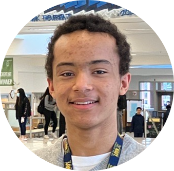
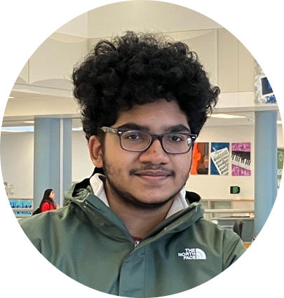

Donald R. WestDonald West is currently a junior at Interlake High School. He has been passionate about the environment since he was 9 having joined his elementary school’s Green Team. He’s been in the business of recycling electronics since he was 14, using the earnings to fund Clover. |

Shyam ArumugamShyam Arumugam is currently a junior at Interlake High School. He is currently a mentor in Interlake’s DECA chapter, member of the National Honor Society and a writer for the Interlake Inquirer. He has also authored a research paper investigating the feasibility of reducing e-waste through product design. |